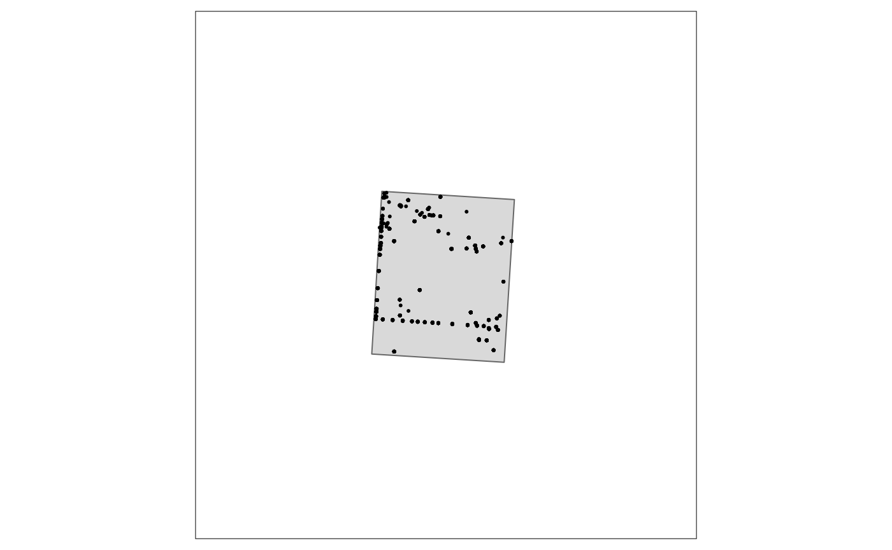

The full process
Department for Environment and Water
Nigel Willoughby
Tuesday, 26 March, 2024
Source:vignettes/020_clean.Rmd
020_clean.Rmd
pacs <- c("knitr"
, "envClean"
, "envReport"
, "envFunc", "fs", "purrr"
, "dplyr", "sf", "tibble"
, "tmap", "terra", "rstanarm"
)
purrr::walk(pacs
, ~suppressPackageStartupMessages(library(.
, character.only = TRUE
, quietly = TRUE)
)
)
# Load data
flor_all <- tibble::as_tibble(envClean::flor_all)
# What crs to use for maps?
use_crs <- 3577 # actually an epsg code. see epsg.io
# set area of interest coordinate reference system
aoi <- envClean::aoi %>%
sf::st_transform(crs = use_crs)
Data
Here, we’ll start with combined floristic data (called
flor_all) from the mallee in South Australia. This data set
is provided with envClean and is a small subset of a GBIF occurrence download (GBIF.Org 2022).
Area of interest
Usually this is a geographic and/or taxonomic area of interest. An
example area overlapping flor_all is provided in
aoi. Converting flor_all to sf
allows plotting them together.
# Create simple feature from flor_all
flor_all_sf <- flor_all %>%
sf::st_as_sf(coords = c("long", "lat")
, crs = 4326
)
# Plot flor_all along with aoi
tm_shape(aoi
, bbox = st_bbox(flor_all_sf)
) +
tm_polygons() +
tm_shape(flor_all_sf) +
tm_dots()
Filtering flor_all to aoi is done with
filter_geo_range.
# Filter area of interest
flor_geo_range <- filter_geo_range(flor_all
, use_aoi = aoi
) %>%
add_time_stamp()
# Have a look at results
flor_geo_range
#> # A tibble: 1,419 × 10
#> long lat area data_name site date original_name rel_metres month
#> <dbl> <dbl> <dbl> <fct> <chr> <date> <chr> <dbl> <dbl>
#> 1 140. -34.5 8.17e7 GBIF 2573… 2020-02-22 Eremophila g… 500 2
#> 2 140. -34.5 8.17e7 GBIF 3902… 2022-08-14 Triodia scar… NA 8
#> 3 140. -34.5 8.17e7 GBIF 3902… 2022-08-14 Beyeria lech… NA 8
#> 4 140. -34.5 8.17e7 GBIF 3902… 2022-08-14 Walsholaria … NA 8
#> 5 140. -34.5 8.17e7 GBIF 3058… 2019-09-01 Triodia scar… 564 9
#> 6 140. -34.5 8.17e7 GBIF 3058… 2019-09-01 Westringia r… 564 9
#> 7 140. -34.5 8.17e7 GBIF 3902… 2022-08-14 Phebalium bu… NA 8
#> 8 140. -34.5 8.17e7 GBIF 3902… 2022-08-14 Acacia rigens NA 8
#> 9 140. -34.5 8.17e7 GBIF 3902… 2022-08-14 Exocarpos ap… NA 8
#> 10 140. -34.5 8.17e7 GBIF 3923… 2022-08-14 Maireana rad… NA 8
#> # ℹ 1,409 more rows
#> # ℹ 1 more variable: year <dbl>Check that spatial filter worked.
# Create sf from flor_geo_range
aoi_sf <- flor_geo_range %>%
sf::st_as_sf(coords = c("long", "lat")
, crs = 4326
)
# Plot flor_geo_range along with aoi (using the same extent/bbox as the previous plot)
tm_shape(aoi
, bbox = st_bbox(flor_all_sf)
) +
tm_polygons() +
tm_shape(aoi_sf) +
tm_dots()
Context: scales of interest
The original location columns probably suggest metre accuracy, or
even sub-metre. There may also be a field dampening expectations of such
accuracy with estimates of precision for the location. In the following
workflow, a precision threshold is set and then an accuracy threshold is
adopted. All records with worse precision than threshold are removed,
and then all records within the accuracy threshold are lumped. The
lumping is done via a raster placed over the aoi.
The original time scale probably suggests accuracy to day, or perhaps even hour, or sub-hour. Choose a scale of relevance to your question. In the example below month is used. Thus all data recorded within a spatial location within a month are treated as one ‘visit’. A ‘taxa’ within a ‘visit’ is considered a ‘record’.
Precision
Records with precision less than threshold are filtered using
filter_geo_rel. This takes a dataframe (df) as
its first argument, in this case flor_geo_range.
dist_col specifies the column in df that
contains the precision estimates. dist provides the
threshold above which to filter. If there are data sources (or any other
columns in df) that do not include an estimate of spatial
precision, but you would like to keep, this can be done with the
argument over_ride. This takes a named list, where names
need to match the columns in df. Any levels within the
columns provided in over_ride will not be filtered,
irrespective of the values in dist_col.
context <- c("year", "month", "lat", "long", "cell")
include_data_name <- c("ALIS","BCM","NVB","TERN")
flor_geo_rel <- reduce_geo_rel(flor_geo_range
, dist_col = "rel_metres"
, dist_min = 100
, context = context
, extra_cols = "original_name"
, over_ride_na = list(data_name = include_data_name)
) %>%
add_time_stamp()
# Have a look at results
flor_geo_rel
#> # A tibble: 1,354 × 6
#> year month lat long original_name rel_metres_adj
#> <dbl> <dbl> <dbl> <dbl> <chr> <dbl>
#> 1 1980 12 -34.6 140. Acacia colletioides 10000
#> 2 1980 12 -34.6 140. Acacia oswaldii 10000
#> 3 1980 12 -34.6 140. Acacia wilhelmiana 10000
#> 4 1980 12 -34.6 140. Beyeria opaca 10000
#> 5 1980 12 -34.6 140. Chenopodium desertorum 10000
#> 6 1980 12 -34.6 140. Cratystylis conocephala 10000
#> 7 1980 12 -34.6 140. Enchylaena tomentosa 10000
#> 8 1980 12 -34.6 140. Eremophila crassifolia 10000
#> 9 1980 12 -34.6 140. Eremophila glabra 10000
#> 10 1980 12 -34.6 140. Eremophila scoparia 10000
#> # ℹ 1,344 more rowsRasterize
Now that records with dubious spatial precision have been removed, an
accuracy threshold is adpoted by rasterizing remaining records into the
cells of aoi_raster, created here.
aoi_raster <- terra::rast(ext = round(terra::ext(aoi), -3)
, resolution = 30
, crs = paste0("epsg:",use_crs)
)
aoi_raster
#> class : SpatRaster
#> dimensions : 367, 300, 1 (nrow, ncol, nlyr)
#> resolution : 30, 30 (x, y)
#> extent : 723000, 732000, -3800000, -3788990 (xmin, xmax, ymin, ymax)
#> coord. ref. : GDA94 / Australian Albers (EPSG:3577)Rasterizing the current data is then done via
add_raster_cell. This function has the argument
add_xy which will add the centroid of the cell back to the
data frame using the same names as the original x and
y columns. Alternatively, the x and
y columns will be lost from the returned data frame,
replaced with cell, the raster cell id.
flor_geo_bin <- envRaster::add_raster_cell(aoi_raster
, flor_geo_rel
, add_xy = TRUE
, crs_df = 4283
) %>%
add_time_stamp()
# Have a look at results
flor_geo_bin
#> # A tibble: 1,326 × 7
#> cell long lat year month original_name rel_metres_adj
#> <dbl> <dbl> <dbl> <dbl> <dbl> <chr> <dbl>
#> 1 4529 140. -34.5 2020 10 Billardiera cymosa 1500
#> 2 5124 140. -34.5 2020 2 Eremophila glabra 500
#> 3 6625 140. -34.5 2019 9 Walsholaria magniflora 750
#> 4 6625 140. -34.5 2020 9 Ptilotus seminudus 750
#> 5 7229 140. -34.5 2020 11 Thysanotus baueri 1000
#> 6 7340 140. -34.5 2006 10 Austrostipa acrociliata 50
#> 7 7340 140. -34.5 2006 10 Beyeria lechenaultii 50
#> 8 7340 140. -34.5 2006 10 Chenopodium wilsonii 50
#> 9 7340 140. -34.5 2006 10 Eucalyptus gracilis 50
#> 10 7340 140. -34.5 2006 10 Eucalyptus oleosa 50
#> # ℹ 1,316 more rowsTaxonomy
Make taxonomy
Historically, reconciling taxonomy has been by far the most time-consuming, and necessarily expert-driven part of cleaning biological data from any unstructured data set(s). In the past it was often necessary to get an expert botanist to generate an analysis specific taxonomy, taking into account such things as the area of interest, timing (e.g. decade (was it a wet decade), season (was the timing right for orchids or not?)) of the of the main previous surveys, and even possibly the expertise-at-survey-time of the observers. Nothing will replace the quality of the results from such a process. Using online taxonomic tools such as the GBIF taxonomy backbone provides an automated alternative that comes with an unquantified (but unlikely to be negligible) penalty in quality. However, the enormous benefit in flexibility and time provided by automated tools makes them essential in practice.
Reconciling taxonomy can be done with the
make_taxa_taxonomy function. This returns a list with the
following objects:
-
raw: results fromrgbif::name_backbone()with a few extras. -
lutaxa: a simple lookup from the original name provided to thetaxato use in place of that name. Thus,taxais likely to be duplicated -
taxonomy: provides the full taxonomic hierarchy for each uniquetaxainlutaxa. The columntaxaintaxonomyshould not have any duplicates. The output can also include lifeform, lifespan and indigenous status columns, if they are available from any of the original data sources and they are provided tomake_taxonomy. -
common: the result of an attempt to find a common name for eachtaxaintaxonomy. Split fromtaxonomyas it seemed impossible to manage duplication.
taxonomy_file <- here::here("inst", "gbif.parquet")
raw <- get_taxonomy(flor_geo_bin
, taxonomy_file = taxonomy_file
)
taxa <- make_taxonomy(flor_geo_bin
, taxonomy_file = taxonomy_file
)A look at lutaxa.
taxa$lutaxa
#> # A tibble: 212 × 9
#> original_name original_rank status kingdom usageKey acceptedUsageKey use_rank
#> <chr> <ord> <chr> <chr> <int> <int> <ord>
#> 1 Eucalyptus l… species ACCEP… Plantae 3177019 NA species
#> 2 Maireana rad… species ACCEP… Plantae 3760840 NA species
#> 3 Roepera glau… species ACCEP… Plantae 3987022 NA species
#> 4 Beyeria lech… species ACCEP… Plantae 7276040 NA species
#> 5 Melaleuca la… species ACCEP… Plantae 5415775 NA species
#> 6 Sclerolaena … species ACCEP… Plantae 7548033 NA species
#> 7 Maireana eri… species ACCEP… Plantae 3755857 NA species
#> 8 Eucalyptus o… species ACCEP… Plantae 3177314 NA species
#> 9 Westringia r… species ACCEP… Plantae 7307131 NA species
#> 10 Maireana pen… species ACCEP… Plantae 3760912 NA species
#> # ℹ 202 more rows
#> # ℹ 2 more variables: best_key <int>, taxa <chr>and taxa_taxonomy
taxa$taxonomy
#> # A tibble: 211 × 18
#> taxa best_key scientificName rank kingdom phylum order family genus species
#> <chr> <int> <chr> <ord> <chr> <chr> <chr> <chr> <chr> <chr>
#> 1 Call… 2684273 Callitris pre… spec… Plantae Trach… Pina… Cupre… Call… Callit…
#> 2 Call… 2684334 Callitris ver… spec… Plantae Trach… Pina… Cupre… Call… Callit…
#> 3 Fest… 2702727 Festuca myuro… spec… Plantae Trach… Poal… Poace… Fest… Festuc…
#> 4 Brom… 2703740 Bromus rubens… spec… Plantae Trach… Poal… Poace… Brom… Bromus…
#> 5 Brom… 2703760 Bromus diandr… spec… Plantae Trach… Poal… Poace… Brom… Bromus…
#> 6 Gahn… 2710060 Gahnia lanige… spec… Plantae Trach… Poal… Cyper… Gahn… Gahnia…
#> 7 Lepi… 2731138 Lepidosperma … spec… Plantae Trach… Poal… Cyper… Lepi… Lepido…
#> 8 Mora… 2744657 Moraea setifo… spec… Plantae Trach… Aspa… Irida… Mora… Moraea…
#> 9 Aspa… 2768367 Asparagus asp… spec… Plantae Trach… Aspa… Aspar… Aspa… Aspara…
#> 10 Loma… 2770905 Lomandra leuc… spec… Plantae Trach… Aspa… Aspar… Loma… Lomand…
#> # ℹ 201 more rows
#> # ℹ 8 more variables: kingdomKey <int>, phylumKey <int>, classKey <int>,
#> # orderKey <int>, familyKey <int>, genusKey <int>, speciesKey <int>,
#> # class <chr>Filter taxonomy
Cleaning to a single taxonomy is now possible sing
lutaxa and taxa_taxonomy.
At this point, the context is also exclusively applied.
Thus the output of applying filter_taxa is to generate a
single record for each taxa within each context. An attempt will also be
made to provide a single value for any extra_cols but this
will fail to provide a unique result if there are values within any of
extra_cols that are not equivalent within a taxa and
context.
flor_taxa <- filter_taxa(flor_geo_bin
, taxa_col = "original_name"
, context = context
, taxonomy = taxa
) %>%
add_time_stamp()
# Have a look at results
flor_taxa
#> # A tibble: 1,305 × 6
#> year month lat long cell taxa
#> <dbl> <dbl> <dbl> <dbl> <dbl> <chr>
#> 1 2020 10 -34.5 140. 4529 Billardiera cymosa
#> 2 2006 11 -34.5 140. 9074 Billardiera cymosa
#> 3 2006 10 -34.5 140. 14814 Billardiera cymosa
#> 4 1990 5 -34.5 140. 18417 Billardiera cymosa
#> 5 2006 10 -34.5 140. 28336 Billardiera cymosa
#> 6 2006 10 -34.5 140. 32298 Billardiera cymosa
#> 7 1990 6 -34.5 140. 34545 Billardiera cymosa
#> 8 2006 10 -34.5 140. 35964 Billardiera cymosa
#> 9 2006 10 -34.5 140. 37727 Billardiera cymosa
#> 10 2006 10 -34.5 140. 39162 Billardiera cymosa
#> # ℹ 1,295 more rowsSingletons
An implicit assumption in collation of data sources is usually that records were a list of taxa collected at a specific spatial location (and date). In many cases this assumption proves incorrect. For example, records may be related to, say, tree health monitoring where no other taxa were concurrently recorded.
Thus, filtering ‘singleton’ sites (a site with only a single taxa was recorded) is often prudent.
This will also inadvertently filter legitimate single taxa lists. For example, some areas of samphire or mangroves may have only a single taxa recorded within a survey site. As always, it depends on the goal of any particular analysis whether this trade-off will be worthwhile.
# Filter singletons
flor_single <- filter_counts(flor_taxa
, context = context
, thresh = 1
) %>%
add_time_stamp()
# Have a look at results
flor_single
#> # A tibble: 1,278 × 6
#> year month lat long cell taxa
#> <dbl> <dbl> <dbl> <dbl> <dbl> <chr>
#> 1 2006 11 -34.5 140. 9074 Billardiera cymosa
#> 2 2006 10 -34.5 140. 14814 Billardiera cymosa
#> 3 1990 5 -34.5 140. 18417 Billardiera cymosa
#> 4 2006 10 -34.5 140. 28336 Billardiera cymosa
#> 5 2006 10 -34.5 140. 32298 Billardiera cymosa
#> 6 1990 6 -34.5 140. 34545 Billardiera cymosa
#> 7 2006 10 -34.5 140. 35964 Billardiera cymosa
#> 8 2006 10 -34.5 140. 37727 Billardiera cymosa
#> 9 2006 10 -34.5 140. 39162 Billardiera cymosa
#> 10 2006 10 -34.5 140. 26735 Eremophila glabra
#> # ℹ 1,268 more rowsEffort
Aggregated data sets are likely to contain records of taxa at spatial locations collected by almost any method imaginable. The effort any observer(s) put into time and taxonomy at each spatial location is usually unknown.
Given that effort matters when documenting ecology (e.g. Wiens 1989), filtering ‘effort’ is an attempt to remove the most seriously under- and over-sampled contexts.
Examples of low taxa richness contexts that may occur in large, unstructured data sets:
- brief, opportune records
- tree-health monitoring data
Examples of high taxa richness contexts that may occur in large, unstructured data sets:
- an observer wandering widely from the location they recorded, particularly if crossing an ecotone
- several observers working together
- an observer with well above average botanical knowledge
- observations taken over a long time-frame but recorded on a single day
These examples just scratch the surface of the ways in which taxa richness can deviate from that expected from an average effort by an average observer.
Taxa richness can be modelled as a function of any variables of interest, for example:
- nothing. This option might be useful in relatively small areas where the non-biological drivers of biological change are relatively stable
- a continuous variable of interest. Say, annual mean temperature, or, soil ph
- principal components. This option is best suited to analyses accompanied by many variables all of which are drivers, or closely correlated with, biological change
- a categorical variable of interest. Say, IBRA Subregions
Taxa richness can be modelled using a Bayesian generalised linear
model using the make_effort_mod function. This implements
the rstan_glm function in the rstanarm package
(Gabry and Goodrich 2023; Brilleman et al.
2018). The resulting model is used to predict upper and lower
bounds for acceptable taxa richness, by choosing acceptable lower and
upper percentiles or richness.
# run model
effort_mod <- make_effort_mod(flor_single
, context = context
)
#>
#> SAMPLING FOR MODEL 'count' NOW (CHAIN 1).
#> Chain 1:
#> Chain 1: Gradient evaluation took 0.000282 seconds
#> Chain 1: 1000 transitions using 10 leapfrog steps per transition would take 2.82 seconds.
#> Chain 1: Adjust your expectations accordingly!
#> Chain 1:
#> Chain 1:
#> Chain 1: Iteration: 1 / 2000 [ 0%] (Warmup)
#> Chain 1: Iteration: 200 / 2000 [ 10%] (Warmup)
#> Chain 1: Iteration: 400 / 2000 [ 20%] (Warmup)
#> Chain 1: Iteration: 600 / 2000 [ 30%] (Warmup)
#> Chain 1: Iteration: 800 / 2000 [ 40%] (Warmup)
#> Chain 1: Iteration: 1000 / 2000 [ 50%] (Warmup)
#> Chain 1: Iteration: 1001 / 2000 [ 50%] (Sampling)
#> Chain 1: Iteration: 1200 / 2000 [ 60%] (Sampling)
#> Chain 1: Iteration: 1400 / 2000 [ 70%] (Sampling)
#> Chain 1: Iteration: 1600 / 2000 [ 80%] (Sampling)
#> Chain 1: Iteration: 1800 / 2000 [ 90%] (Sampling)
#> Chain 1: Iteration: 2000 / 2000 [100%] (Sampling)
#> Chain 1:
#> Chain 1: Elapsed Time: 0.466 seconds (Warm-up)
#> Chain 1: 0.505 seconds (Sampling)
#> Chain 1: 0.971 seconds (Total)
#> Chain 1:
#>
#> SAMPLING FOR MODEL 'count' NOW (CHAIN 2).
#> Chain 2:
#> Chain 2: Gradient evaluation took 0.000119 seconds
#> Chain 2: 1000 transitions using 10 leapfrog steps per transition would take 1.19 seconds.
#> Chain 2: Adjust your expectations accordingly!
#> Chain 2:
#> Chain 2:
#> Chain 2: Iteration: 1 / 2000 [ 0%] (Warmup)
#> Chain 2: Iteration: 200 / 2000 [ 10%] (Warmup)
#> Chain 2: Iteration: 400 / 2000 [ 20%] (Warmup)
#> Chain 2: Iteration: 600 / 2000 [ 30%] (Warmup)
#> Chain 2: Iteration: 800 / 2000 [ 40%] (Warmup)
#> Chain 2: Iteration: 1000 / 2000 [ 50%] (Warmup)
#> Chain 2: Iteration: 1001 / 2000 [ 50%] (Sampling)
#> Chain 2: Iteration: 1200 / 2000 [ 60%] (Sampling)
#> Chain 2: Iteration: 1400 / 2000 [ 70%] (Sampling)
#> Chain 2: Iteration: 1600 / 2000 [ 80%] (Sampling)
#> Chain 2: Iteration: 1800 / 2000 [ 90%] (Sampling)
#> Chain 2: Iteration: 2000 / 2000 [100%] (Sampling)
#> Chain 2:
#> Chain 2: Elapsed Time: 0.453 seconds (Warm-up)
#> Chain 2: 0.471 seconds (Sampling)
#> Chain 2: 0.924 seconds (Total)
#> Chain 2:
#>
#> SAMPLING FOR MODEL 'count' NOW (CHAIN 3).
#> Chain 3:
#> Chain 3: Gradient evaluation took 0.000108 seconds
#> Chain 3: 1000 transitions using 10 leapfrog steps per transition would take 1.08 seconds.
#> Chain 3: Adjust your expectations accordingly!
#> Chain 3:
#> Chain 3:
#> Chain 3: Iteration: 1 / 2000 [ 0%] (Warmup)
#> Chain 3: Iteration: 200 / 2000 [ 10%] (Warmup)
#> Chain 3: Iteration: 400 / 2000 [ 20%] (Warmup)
#> Chain 3: Iteration: 600 / 2000 [ 30%] (Warmup)
#> Chain 3: Iteration: 800 / 2000 [ 40%] (Warmup)
#> Chain 3: Iteration: 1000 / 2000 [ 50%] (Warmup)
#> Chain 3: Iteration: 1001 / 2000 [ 50%] (Sampling)
#> Chain 3: Iteration: 1200 / 2000 [ 60%] (Sampling)
#> Chain 3: Iteration: 1400 / 2000 [ 70%] (Sampling)
#> Chain 3: Iteration: 1600 / 2000 [ 80%] (Sampling)
#> Chain 3: Iteration: 1800 / 2000 [ 90%] (Sampling)
#> Chain 3: Iteration: 2000 / 2000 [100%] (Sampling)
#> Chain 3:
#> Chain 3: Elapsed Time: 0.468 seconds (Warm-up)
#> Chain 3: 0.519 seconds (Sampling)
#> Chain 3: 0.987 seconds (Total)
#> Chain 3:
#>
#> SAMPLING FOR MODEL 'count' NOW (CHAIN 4).
#> Chain 4:
#> Chain 4: Gradient evaluation took 0.000116 seconds
#> Chain 4: 1000 transitions using 10 leapfrog steps per transition would take 1.16 seconds.
#> Chain 4: Adjust your expectations accordingly!
#> Chain 4:
#> Chain 4:
#> Chain 4: Iteration: 1 / 2000 [ 0%] (Warmup)
#> Chain 4: Iteration: 200 / 2000 [ 10%] (Warmup)
#> Chain 4: Iteration: 400 / 2000 [ 20%] (Warmup)
#> Chain 4: Iteration: 600 / 2000 [ 30%] (Warmup)
#> Chain 4: Iteration: 800 / 2000 [ 40%] (Warmup)
#> Chain 4: Iteration: 1000 / 2000 [ 50%] (Warmup)
#> Chain 4: Iteration: 1001 / 2000 [ 50%] (Sampling)
#> Chain 4: Iteration: 1200 / 2000 [ 60%] (Sampling)
#> Chain 4: Iteration: 1400 / 2000 [ 70%] (Sampling)
#> Chain 4: Iteration: 1600 / 2000 [ 80%] (Sampling)
#> Chain 4: Iteration: 1800 / 2000 [ 90%] (Sampling)
#> Chain 4: Iteration: 2000 / 2000 [100%] (Sampling)
#> Chain 4:
#> Chain 4: Elapsed Time: 0.455 seconds (Warm-up)
#> Chain 4: 0.532 seconds (Sampling)
#> Chain 4: 0.987 seconds (Total)
#> Chain 4:
# filter using model results
flor_effort <- flor_single %>%
dplyr::inner_join(effort_mod$mod_cell_result %>%
dplyr::filter(keep)
) %>%
dplyr::select(names(flor_single)) %>%
add_time_stamp()
# Have a look at results
flor_effort
#> # A tibble: 1,059 × 6
#> year month lat long cell taxa
#> <dbl> <dbl> <dbl> <dbl> <dbl> <chr>
#> 1 2006 11 -34.5 140. 9074 Billardiera cymosa
#> 2 2006 10 -34.5 140. 14814 Billardiera cymosa
#> 3 1990 5 -34.5 140. 18417 Billardiera cymosa
#> 4 2006 10 -34.5 140. 28336 Billardiera cymosa
#> 5 2006 10 -34.5 140. 32298 Billardiera cymosa
#> 6 2006 10 -34.5 140. 35964 Billardiera cymosa
#> 7 2006 10 -34.5 140. 37727 Billardiera cymosa
#> 8 2006 10 -34.5 140. 39162 Billardiera cymosa
#> 9 2006 10 -34.5 140. 26735 Eremophila glabra
#> 10 1990 5 -34.6 140. 83038 Eremophila glabra
#> # ℹ 1,049 more rowsProportion of sites at which a taxa occurs
When clustering biological data, it is often useful to exclude rare
taxa from the data set. filter_prop allows filtering such
taxa.
# Filter taxa recorded at less than 5% of contexts
flor_prop <- filter_prop(flor_effort
, context = context
, default_per = 5
) %>%
add_time_stamp()
# Have a look at results
flor_prop
#> # A tibble: 847 × 6
#> year month lat long cell taxa
#> <dbl> <dbl> <dbl> <dbl> <dbl> <chr>
#> 1 2006 11 -34.5 140. 9074 Billardiera cymosa
#> 2 2006 10 -34.5 140. 14814 Billardiera cymosa
#> 3 1990 5 -34.5 140. 18417 Billardiera cymosa
#> 4 2006 10 -34.5 140. 28336 Billardiera cymosa
#> 5 2006 10 -34.5 140. 32298 Billardiera cymosa
#> 6 2006 10 -34.5 140. 35964 Billardiera cymosa
#> 7 2006 10 -34.5 140. 37727 Billardiera cymosa
#> 8 2006 10 -34.5 140. 39162 Billardiera cymosa
#> 9 2006 10 -34.5 140. 7340 Ptilotus seminudus
#> 10 2006 10 -34.5 140. 12659 Ptilotus seminudus
#> # ℹ 837 more rowsTime
So far, all contexts year, month, lat, long or cell have been kept.
It may be desirable to keep only the most recent contexts. Just use
dplyr…
flor_recent <- flor_prop %>%
dplyr::group_by(across(any_of(context[!context %in% c("month", "year")]))) %>%
dplyr::filter(year == max(year)
, month == max(month)
) %>%
dplyr::ungroup() %>%
add_time_stamp()
# Have a look at results
flor_recent
#> # A tibble: 783 × 6
#> year month lat long cell taxa
#> <dbl> <dbl> <dbl> <dbl> <dbl> <chr>
#> 1 2006 11 -34.5 140. 9074 Billardiera cymosa
#> 2 2006 10 -34.5 140. 14814 Billardiera cymosa
#> 3 1990 5 -34.5 140. 18417 Billardiera cymosa
#> 4 2006 10 -34.5 140. 28336 Billardiera cymosa
#> 5 2006 10 -34.5 140. 32298 Billardiera cymosa
#> 6 2006 10 -34.5 140. 35964 Billardiera cymosa
#> 7 2006 10 -34.5 140. 37727 Billardiera cymosa
#> 8 2006 10 -34.5 140. 39162 Billardiera cymosa
#> 9 2006 10 -34.5 140. 7340 Ptilotus seminudus
#> 10 2006 10 -34.5 140. 12659 Ptilotus seminudus
#> # ℹ 773 more rowsCleaning summary
A little care naming objects enables easily capturing the results of
the cleaning process. The function cleaning_text summarises
the taxa, records, visits and sites in each flor_ data
frame.
clean_summary <- cleaning_summary(prefix = "flor_"
, save_ends = FALSE
, site_cols = c("cell", "lat", "long")
, visit_cols = c("month", "year")
, taxa_cols = c("taxa", "original_name")
)
clean_summary <- cleaning_text(cleaning_summary)
out <- NULL
# this loops through child.Rmd, generating the results for each report card
for (i in clean_summary$childID) {
childID <- i
out = c(out, knit_expand("inst/rmd/child.Rmd"))
}
tempID <- "florgeorange"
geo_range
The initial data set contained 213 taxa, 1,419 records, 146 visits, and 141 sites. At the start of the cleaning process context was defined by lat, long, month, year and original_name.
tempID <- "florgeorel"
geo_rel
The cleaning step ‘spatial reliability’: did not change the number of taxa (213); took the number of records from 1,419 to 1,354; did not change the number of visits (146); and did not change the number of sites (141). At this stage of the cleaning process context was defined by lat, long, month, year and original_name.
tempID <- "florgeobin"
geo_bin
The cleaning step ‘assigning locations to spatial bins’: did not change the number of taxa (213); took the number of records from 1,354 to 1,326; took the number of visits from 146 to 135; and took the number of sites from 141 to 125. At this stage of the cleaning process context was defined by cell, lat, long, month, year and original_name. cell was added.
tempID <- "flortaxa"
taxa
The cleaning step ‘align taxonomy and resolve any taxonomic duplication within bins’: took the number of taxa from 213 to 209; took the number of records from 1,326 to 1,305; did not change the number of visits (135); and did not change the number of sites (125). At this stage of the cleaning process context was defined by cell, lat, long, month, year and taxa. taxa was added and original_name was removed.
tempID <- "florsingle"
single
The cleaning step ‘singletons’: took the number of taxa from 209 to 206; took the number of records from 1,305 to 1,278; took the number of visits from 135 to 108; and took the number of sites from 125 to 101. At this stage of the cleaning process context was defined by cell, lat, long, month, year and taxa.
tempID <- "floreffort"
effort
The cleaning step ‘context effort’: took the number of taxa from 206 to 145; took the number of records from 1,278 to 1,059; took the number of visits from 108 to 105; and took the number of sites from 101 to 98. At this stage of the cleaning process context was defined by cell, lat, long, month, year and taxa.
tempID <- "florprop"
prop
The cleaning step ‘proportion of sites’: took the number of taxa from 145 to 50; took the number of records from 1,059 to 847; took the number of visits from 105 to 104; and took the number of sites from 98 to 97. At this stage of the cleaning process context was defined by cell, lat, long, month, year and taxa.
tempID <- "florrecent"
recent
The cleaning step ‘the most recent visit to a cell’: did not change the number of taxa (50); took the number of records from 847 to 783; took the number of visits from 104 to 97; and did not change the number of sites (97). At this stage of the cleaning process context was defined by cell, lat, long, month, year and taxa.
What happened to x?
It can often be useful to trace the results for a single taxa through the filtering process. How did, say, Eucalyptus incrassata fare through the process?
find_taxa(taxa = "Eucalyptus incrassata"
, lookup_taxa = taxa$lutaxa
)
#> # A tibble: 8 × 6
#> name obj has_stamp nrow ctime summary
#> <chr> <list> <lgl> <dbl> <dttm> <chr>
#> 1 flor_geo_range <tibble [1 × 2]> TRUE 1419 2024-03-26 10:30:53 Eucalyptu…
#> 2 flor_geo_rel <tibble [1 × 2]> TRUE 1354 2024-03-26 10:30:55 Eucalyptu…
#> 3 flor_geo_bin <tibble [1 × 2]> TRUE 1326 2024-03-26 10:30:55 Eucalyptu…
#> 4 flor_taxa <tibble [1 × 2]> TRUE 1305 2024-03-26 10:30:58 Eucalyptu…
#> 5 flor_single <tibble [1 × 2]> TRUE 1278 2024-03-26 10:30:59 Eucalyptu…
#> 6 flor_effort <tibble [1 × 2]> TRUE 1059 2024-03-26 10:31:04 Eucalyptu…
#> 7 flor_prop <tibble [1 × 2]> TRUE 847 2024-03-26 10:31:05 Eucalyptu…
#> 8 flor_recent <tibble [1 × 2]> TRUE 783 2024-03-26 10:31:05 Eucalyptu…Summary
After ingesting data from a range of sources (GBIF) the
envClean functions helped clean the data ready for further
analysis. The original 1419 records were cleaned, tidied and filtered to
783 records.